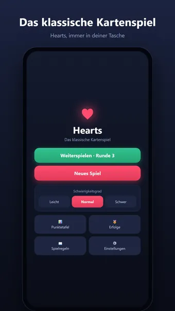
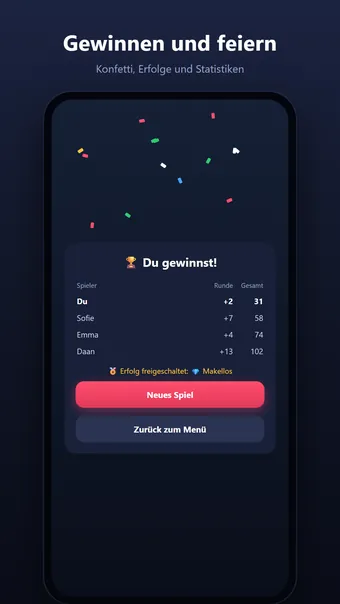
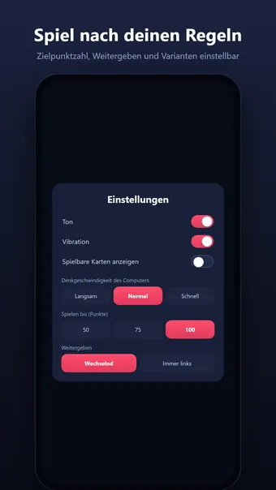

Über Hearts
Spiele Hearts, das klassische Kartenspiel — jederzeit, überall und komplett offline. Du gegen drei Computerspieler: Wer sammelt die wenigsten Strafpunkte?
So wird gespielt
Jede Herzkarte in deinen Stichen kostet 1 Punkt, die Pik-Dame ganze 13. Bekenne Farbe, weiche den Punkten aus — oder wage den Durchmarsch und nimm alle 26 Strafpunkte in einer Runde, um sie deinen Gegnern zuzuschieben. Die Partie endet, sobald jemand die Zielpunktzahl erreicht; wer die wenigsten Punkte hat, gewinnt.
Neu bei den Regeln? Die eingebauten Tipps erklären das Spiel Schritt für Schritt beim Spielen.
Clevere Gegner
Drei Schwierigkeitsgrade, von freundlich bis gnadenlos. Auf Schwer zählt der Computer Karten mit, baut Renoncen auf und merkt sogar, wenn du heimlich den Durchmarsch versuchst.
Spiele nach deinen Regeln
- Einstellbare Zielpunktzahl: 50, 75 oder 100 Punkte
- Weitergeben: wechselnd, immer links, immer rechts oder nie
- Varianten: Karo-Bube zählt −10, Pik-Dame bricht Herz
- Durchmarsch-Wertung: +26 für die anderen oder −26 für den Schützen
Und außerdem
- Verdiene 18 Erfolge, vom ersten Sieg bis zur makellosen Partie
- Ausführliche Statistiken: Siegesserien, Durchschnittspunktzahl und mehr
- Pausiere deine Partie und setze sie später genau dort fort, wo du aufgehört hast
- Sound und Vibration (in den Einstellungen abschaltbar)
- Auch im Querformat und auf Tablets
Kostenlos spielbar. Die App zeigt Werbung, die du mit einem optionalen Kauf entfernen kannst; ein Konto ist nicht nötig.
Häufige Fragen
Ist Hearts kostenlos?
Ja. Hearts kannst du kostenlos herunterladen und spielen. Die App zeigt Werbung, die du mit einem optionalen In-App-Kauf entfernen kannst.
Funktioniert Hearts offline?
Ja. Hearts funktioniert ohne Internetverbindung, also auch im Flugzeug, im Zug oder überall ohne WLAN.
Brauche ich ein Konto, um Hearts zu spielen?
Nein. Es gibt keine Registrierung und keine Anmeldung: App öffnen und losspielen. Deine Spiele und Einstellungen bleiben auf deinem eigenen Gerät.
Wie spielt man Hearts?
Jede Herzkarte in deinen Stichen kostet 1 Punkt, die Pik-Dame ganze 13. Bekenne Farbe, weiche den Punkten aus — oder wage den Durchmarsch und nimm alle 26 Strafpunkte in einer Runde, um sie deinen Gegnern zuzuschieben. Die Partie endet, sobald jemand die Zielpunktzahl erreicht; wer die wenigsten Punkte hat, gewinnt. Neu bei den Regeln? Die eingebauten Tipps erklären das Spiel Schritt für Schritt beim Spielen.
Wo kann ich Hearts herunterladen?
Hearts gibt es für Android-Smartphones und -Tablets bei Google Play. Nutze den Button oben auf dieser Seite.
Diese Spiele könnten dir auch gefallen
Sudoku
Klassisches Sudoku. Endlose Rätsel und täglich eine neue Herausforderung.
Google PlayMinesweeper
Der Minesweeper-Klassiker. Endlose Minenfelder und täglich ein neues Rätsel.
Google Play30 Seconds
Beschreibe 5 Wörter in 30 Sekunden! Ein lustiges Wortspiel für Freunde.
Google PlayRechtliches
Hier findest du die rechtlichen Dokumente, die für Hearts gelten.
Kontakt
Fragen, Feedback oder eine Datenschutzanfrage? Schreib an joostmuijsenberg.dev@gmail.com.